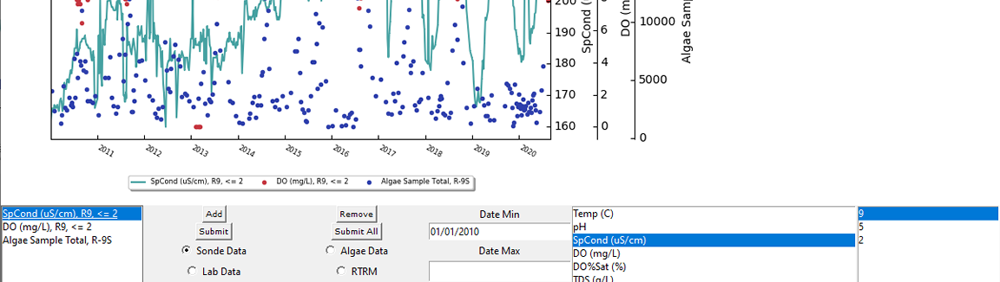

Back
Variable Input Graph
This project was created to allow data to easily be viewed while maintaining each data set's scale. This project used the Python programming language. Tkinter was used to create the interface and matplotlib to display the graph. Modifications were made to matplotlib to allow the graph to have a variable amount of y-axes. Interactive elements allow the user to manipulate properties of the graph as well as the data queries. Data is queried from local networked databases and inserted into the graph.